🏆 EURO 2024 Matches
| Date | Fixture |
Odds |
Win |
Result |
Over ⚽ = over 0.5 ⚽⚽ = over 1.5 ⚽⚽⚽ = over 2.5 ... ► |
Alerts Home 🏥 = Considerable injuries 🏥🏥 = Major injuries 📉 = Dip in form Note, you may see injuries when expanding match but no alert here, meaning the model does not consider them important. |
Alerts Away 🏥 = Considerable injuries 🏥🏥 = Major injuries 📉 = Dip in form Note, you may see injuries when expanding match but no alert here, meaning the model does not consider them important. |
|
|---|---|---|---|---|---|---|---|---|
| Sun. 23 Jun. | Switzerland 1:1 Germany Form: WDWD Form: DWWW |
-0.7 vs 0.69 | 1.7 | 58% | 0.5 | ⚽ 1.5 |
📉 Home team has a dip in form recently | |
| Sun. 23 Jun. | Scotland 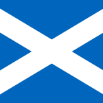 0:1 Hungary Form: DLDL Form: WLLW |
-0.21 vs 0.2 | 2.6 | 26% | 1 | ⚽⚽ 2.07 |
📉 Home team has a dip in form recently | 📉 Away team has a dip in form recently |
🏆 Copa America 2024 Matches
| Date | Fixture |
Odds |
Win |
Result |
Over ⚽ = over 0.5 ⚽⚽ = over 1.5 ⚽⚽⚽ = over 2.5 ... ► |
Alerts Home 🏥 = Considerable injuries 🏥🏥 = Major injuries 📉 = Dip in form Note, you may see injuries when expanding match but no alert here, meaning the model does not consider them important. |
Alerts Away 🏥 = Considerable injuries 🏥🏥 = Major injuries 📉 = Dip in form Note, you may see injuries when expanding match but no alert here, meaning the model does not consider them important. |
|
|---|---|---|---|---|---|---|---|---|
| Sun. 23 Jun. | United States 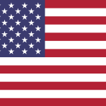 2:0 Bolivia Form: WWLD Form: WLLL |
0.8 vs -0.89 | n/a | 62% | 1 | ⚽⚽⚽ 3.8 |
📉 Home team has a dip in form recently | 📉 Away team has a dip in form recently |
| Sun. 23 Jun. | Mexico 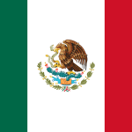 1:0 Jamaica Form: LWLL Form: WLLL |
0.11 vs -0.85 | 1.68 | 19% | 1 | ⚽ 1.89 |
📉 Home team has a dip in form recently | 🏥🏥 📉 Away team has MAJOR injuries and a dip in form recently |
🌍 Global Matches
| Date | Fixture |
Odds |
Win |
Result |
Over ⚽ = over 0.5 ⚽⚽ = over 1.5 ⚽⚽⚽ = over 2.5 ... ► |
Alerts Home 🏥 = Considerable injuries 🏥🏥 = Major injuries 📉 = Dip in form Note, you may see injuries when expanding match but no alert here, meaning the model does not consider them important. |
Alerts Away 🏥 = Considerable injuries 🏥🏥 = Major injuries 📉 = Dip in form Note, you may see injuries when expanding match but no alert here, meaning the model does not consider them important. |
|
|---|---|---|---|---|---|---|---|---|
| Sun. 23 Jun. | Tainan City Taiwan Steel 3:1 Taipei Vikings Form: WWWW Form: LLLL |
1.92 vs -2.64 | 1.05 | 79% | 1 | ⚽⚽⚽⚽⚽ 5.01 |
📉 Away team has a dip in form recently | |
| Sun. 23 Jun. | AC Barnechea 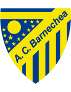 3:2 CD Palestino Form: WDDW Form: LWDW |
-2.39 vs 1.81 | 1.05 | 78% | 0 | ⚽ 1.19 |
📉 Home team has a dip in form recently | |
| Sun. 23 Jun. | Enyimba Aba 2:0 Plateau United FC Form: LDLW Form: WWDL |
1.69 vs -2.54 | n/a | 77% | 1 | ⚽ 1.29 |
📉 Home team has a dip in form recently | 📉 Away team has a dip in form recently |
| Sun. 23 Jun. | Deportes Santa Cruz 1:1 Audax Italiano Form: WDLW Form: WLLW |
-2.17 vs 1.54 | 1.04 | 75% | 0.5 | ⚽ 1.35 |
📉 Home team has a dip in form recently | 📉 Away team has a dip in form recently |
| Sun. 23 Jun. | Sociedade Esportiva Palmeiras 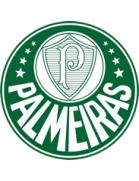 1:1' Esporte Clube Juventude Form: WWWW Form: LDWL |
1.34 vs -2.37 | n/a | 73% | None | ⚽ 1.4 |
🏥🏥 Home team has MAJOR injuries | 📉 Away team has a dip in form recently |
| Sun. 23 Jun. | Western Sydney Wanderers II 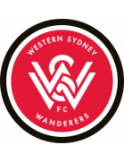 0:3 Sydney FC II Form: WWWL Form: DLLL |
1.29 vs -2.57 | n/a | 73% | 0 | ⚽⚽⚽⚽ 4.46 |
📉 Home team has a dip in form recently | 🏥🏥 📉 Away team has MAJOR injuries and a dip in form recently |
| Sun. 23 Jun. | Vålerenga Fotball Elite 8:0 Sandnes Ulf Form: WWDW Form: LLLL |
1.27 vs -2.0 | n/a | 73% | 1 | ⚽⚽⚽ 3.53 |
📉 Away team has a dip in form recently | |
| Sun. 23 Jun. | Dynamic Herb Cebu FC 7:0 Manila Montet FC Form: WWWW Form: LLLL |
1.13 vs -2.13 | n/a | 71% | 1 | ⚽⚽⚽⚽⚽⚽⚽ 7.54 |
📉 Away team has a dip in form recently | |
| Sun. 23 Jun. | TB Tvøroyri 3:1 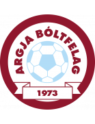 AB Argir Form: DWLD Form: LDLD |
1.05 vs -1.91 | n/a | 71% | 1 | ⚽ 1.68 |
📉 Home team has a dip in form recently | 📉 Away team has a dip in form recently |
| Sun. 23 Jun. | Ravshan Kulob 0:1 Istiqlol Dushanbe Form: LLWD Form: WWWL |
-1.5 vs 1.05 | n/a | 70% | 1 | ⚽ 1.86 |
📉 Home team has a dip in form recently | 📉 Away team has a dip in form recently |
| Sun. 23 Jun. | Pyramids FC 3:1 El Mokawloon SC Form: WWWW Form: WDWL |
0.99 vs -1.73 | 1.33 | 69% | 1 | ⚽⚽ 2.86 |
📉 Away team has a dip in form recently | |
| Sun. 23 Jun. | Alianza Universidad 3:0 Club Juan Pablo II Form: WWDW Form: WLWW |
0.96 vs -1.74 | 1.19 | 68% | 1 | ⚽⚽ 2.19 |
📉 Away team has a dip in form recently | |
| Sun. 23 Jun. | Kwara United FC 4:0 FC Heartland Form: LWLW Form: WLWL |
0.95 vs -1.95 | n/a | 68% | 1 | 😴 0.98 |
📉 Home team has a dip in form recently | 📉 Away team has a dip in form recently |
| Sun. 23 Jun. | Víkingur Gøta 3:0 B68 Toftir Form: LWLW Form: DLLD |
0.86 vs -1.73 | 1.05 | 64% | 1 | ⚽⚽ 2.96 |
📉 Home team has a dip in form recently | 📉 Away team has a dip in form recently |
| Sun. 23 Jun. | United States 2:0 Bolivia Form: WWLD Form: WLLL |
0.8 vs -0.89 | n/a | 62% | 1 | ⚽⚽⚽ 3.8 |
📉 Home team has a dip in form recently | 📉 Away team has a dip in form recently |
| Sun. 23 Jun. | Deportes Antofagasta 2:1 Club Deportes Iquique Form: WWDW Form: DLLW |
-1.38 vs 0.76 | 1.06 | 61% | 0 | ⚽⚽ 2.82 |
📉 Away team has a dip in form recently | |
| Sun. 23 Jun. | Nanjing City 1:0 Cangzhou Mighty Lions Form: LWDW Form: DLLL |
-1.58 vs 0.7 | 1.91 | 58% | 0 | ⚽ 1.53 |
📉 Away team has a dip in form recently | |
| Sun. 23 Jun. | RCD Espanyol Barcelona 2:0 Real Oviedo Form: WDLW Form: DWWL |
0.69 vs -1.43 | n/a | 58% | 1 | ⚽ 1.09 |
📉 Home team has a dip in form recently | 📉 Away team has a dip in form recently |
| Sun. 23 Jun. | Switzerland 1:1 Germany Form: WDWD Form: DWWW |
-0.7 vs 0.69 | 1.7 | 58% | 0.5 | ⚽ 1.5 |
📉 Home team has a dip in form recently | |
| Sun. 23 Jun. | FK Zalgiris Vilnius 4:0 FK Suduva Marijampole Form: WWWW Form: LDLL |
0.69 vs -1.4 | n/a | 57% | 1 | ⚽⚽ 2.67 |
📉 Away team has a dip in form recently | |
| Sun. 23 Jun. | CD O'Higgins 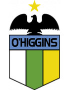 1:1' CSD Colo-Colo Form: DDWW Form: WDLW |
-1.44 vs 0.63 | 1.04 | 55% | None | ⚽ 1.66 |
📉 Away team has a dip in form recently | |
| Sun. 23 Jun. | Skövde AIK 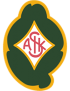 0:2 Sandvikens IF Form: WLDL Form: DWWW |
0.63 vs -1.2 | 3.6 | 55% | 0 | ⚽⚽ 2.45 |
📉 Home team has a dip in form recently | |
| Sun. 23 Jun. | CA Defensores Unidos (Zarate) 2:1 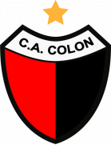 CA Colón Form: LDDD Form: WLWL |
-1.43 vs 0.62 | 1.96 | 55% | 0 | ⚽ 1.34 |
📉 Home team has a dip in form recently | 📉 Away team has a dip in form recently |
| Sun. 23 Jun. | Loyola FC 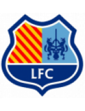 09:00 One Taguig FC Form: WLDW Form: LDWW |
-1.09 vs 0.59 | n/a | 54% | None | ⚽⚽⚽ 3.86 |
📉 Home team has a dip in form recently | |
| Sun. 23 Jun. | Breidablik Kópavogur 1:1 ÍA Akranes Form: LDLL Form: DWLL |
0.59 vs -1.0 | 1.44 | 53% | 0.5 | ⚽⚽⚽ 3.45 |
📉 Home team has a dip in form recently | 📉 Away team has a dip in form recently |
| Sun. 23 Jun. | FK Molodechno 3:0 Volna Pinsk Form: LWWL Form: WDLW |
0.53 vs -1.15 | n/a | 51% | 1 | ⚽ 1.85 |
📉 Home team has a dip in form recently | 📉 Away team has a dip in form recently |
| Sun. 23 Jun. | Blaublitz Akita 3:1 Shimizu S-Pulse Form: DDLL Form: LWWL |
-1.08 vs 0.52 | 2.1 | 51% | 0 | ⚽ 1.27 |
📉 Home team has a dip in form recently | 📉 Away team has a dip in form recently |
| Sun. 23 Jun. | Forge FC 2:1 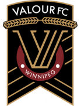 Valour FC Form: WLWL Form: WDWL |
0.49 vs -1.3 | 1.52 | 49% | 1 | ⚽ 1.9 |
📉 Home team has a dip in form recently | 📉 Away team has a dip in form recently |
| Sun. 23 Jun. | Liverpool FC Montevideo 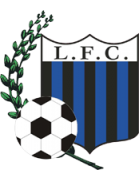 1:0 CA Boston River Form: LLLL Form: WLDL |
0.48 vs -1.02 | 2.16 | 48% | 1 | ⚽ 1.48 |
📉 Home team has a dip in form recently | 📉 Away team has a dip in form recently |
| Sun. 23 Jun. | Dinamo Minsk 2:1 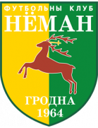 Neman Grodno Form: DWWW Form: WWWW |
0.48 vs -0.88 | n/a | 48% | 1 | ⚽ 1.96 |
||
| Sun. 23 Jun. | Louisville City FC 2:5 Rhode Island FC Form: WWLW Form: DLDW |
0.46 vs -1.26 | n/a | 47% | 0 | ⚽⚽⚽ 3.48 |
📉 Home team has a dip in form recently | 📉 Away team has a dip in form recently |
| Sun. 23 Jun. | Columbus Crew 4:0 Sporting Kansas City Form: WLWL Form: LWLL |
0.45 vs -1.26 | n/a | 46% | 1 | ⚽⚽ 2.86 |
📉 Home team has a dip in form recently | 📉 Away team has a dip in form recently |
| Sun. 23 Jun. | North Carolina FC 0:0 Pittsburgh Riverhounds SC Form: DWLW Form: LDLL |
0.45 vs -1.14 | n/a | 46% | 0.5 | ⚽ 1.22 |
📉 Home team has a dip in form recently | 📉 Away team has a dip in form recently |
| Sun. 23 Jun. | FK Kauno Zalgiris 4:1 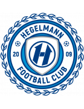 FC Hegelmann Form: WDDW Form: WWWL |
0.44 vs -0.8 | 2.8 | 45% | 1 | ⚽⚽ 2.37 |
📉 Home team has a dip in form recently | 📉 Away team has a dip in form recently |
| Sun. 23 Jun. | ÍF Fuglafjördur 3:4 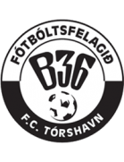 B36 Tórshavn Form: DLLL Form: WDDD |
-1.06 vs 0.41 | 1.15 | 43% | 1 | ⚽⚽ 2.8 |
📉 Home team has a dip in form recently | 📉 Away team has a dip in form recently |
| Sun. 23 Jun. | IK Brage 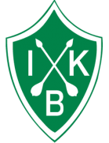 5:0 GIF Sundsvall Form: LLWL Form: DLLD |
0.39 vs -1.29 | 1.69 | 41% | 1 | ⚽ 1.52 |
📉 Home team has a dip in form recently | 📉 Away team has a dip in form recently |
| Sun. 23 Jun. | Philadelphia Union 0:2 Charlotte FC Form: DDLL Form: LWWD |
0.39 vs -1.27 | n/a | 41% | 0 | ⚽ 1.98 |
📉 Home team has a dip in form recently | |
| Sun. 23 Jun. | Cerro Largo FC 0:4 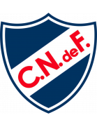 Club Nacional Form: LWDW Form: LWLW |
-1.16 vs 0.39 | 1.87 | 41% | 1 | ⚽ 1.7 |
📉 Away team has a dip in form recently | |
| Sun. 23 Jun. | Club Ferro Carril Oeste 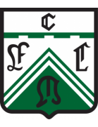 2:2 CA Estudiantes Form: LLWW Form: WWLW |
0.37 vs -1.12 | 1.86 | 40% | 0.5 | 😴 0.99 |
📉 Home team has a dip in form recently | 📉 Away team has a dip in form recently |
| Sun. 23 Jun. | CA Chaco For Ever 0:1 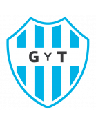 Club de Gimnasia y Tiro Form: DLWD Form: DWDD |
0.37 vs -1.44 | 2.16 | 39% | 0 | 😴 0.91 |
📉 Home team has a dip in form recently | 📉 Away team has a dip in form recently |
| Sun. 23 Jun. | Stabæk Fotball 1:0 Levanger FK Form: WWLW Form: LDWL |
0.36 vs -0.82 | n/a | 39% | 1 | ⚽⚽ 2.67 |
📉 Home team has a dip in form recently | 📉 Away team has a dip in form recently |
| Sun. 23 Jun. | Varbergs BoIS 4:3 Gefle IF Form: WDDW Form: LWLL |
0.35 vs -1.33 | 1.92 | 38% | 1 | ⚽ 1.98 |
📉 Home team has a dip in form recently | 📉 Away team has a dip in form recently |
| Sun. 23 Jun. | Red Bull Bragantino 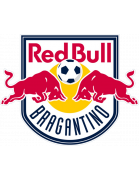 1:1' Esporte Clube Vitória Form: LWLW Form: DDWW |
0.35 vs -1.22 | n/a | 38% | None | ⚽ 1.62 |
📉 Home team has a dip in form recently | |
| Sun. 23 Jun. | Los Angeles FC 6:2 San Jose Earthquakes Form: WWWD Form: DLLL |
0.34 vs -1.3 | 1.35 | 37% | 1 | ⚽⚽ 2.26 |
📉 Away team has a dip in form recently | |
| Sun. 23 Jun. | Vancouver FC 00:00 HFX Wanderers FC Form: WWLD Form: LDDD |
0.34 vs -1.16 | 2.08 | 37% | None | ⚽ 1.99 |
📉 Home team has a dip in form recently | 📉 Away team has a dip in form recently |
| Sun. 23 Jun. | New York Red Bulls 3:0 Toronto FC Form: WLDD Form: DDLL |
0.33 vs -1.41 | n/a | 36% | 1 | ⚽⚽ 2.38 |
📉 Home team has a dip in form recently | 🏥 📉 Away team has considerable injuries and a dip in form recently |
| Sun. 23 Jun. | KA Akureyri 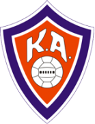 3:2 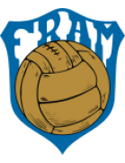 Fram Reykjavík Form: WLLW Form: LDWW |
0.32 vs -1.18 | 1.91 | 35% | 1 | ⚽⚽ 2.22 |
📉 Home team has a dip in form recently | |
| Sun. 23 Jun. | Orlando City SC 4:2 Chicago Fire FC Form: DLLD Form: DDWW |
0.31 vs -1.15 | n/a | 34% | 1 | ⚽ 1.93 |
📉 Home team has a dip in form recently | |
| Sun. 23 Jun. | Torpedo-BelAZ Zhodino 1:0 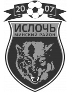 Isloch Minsk Region Form: WWWW Form: LLWW |
0.3 vs -0.97 | n/a | 34% | 1 | 😴 0.81 |
📉 Away team has a dip in form recently | |
| Sun. 23 Jun. | BATE 2 Borisov 1:0 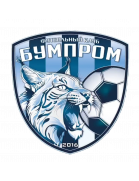 Bumprom Gomel Form: DDDL Form: WWDW |
-0.9 vs 0.28 | n/a | 32% | 0 | ⚽ 1.64 |
📉 Home team has a dip in form recently | |
| Sun. 23 Jun. | IK Oddevold 1:1 Degerfors IF Form: DLLD Form: WWDW |
-1.04 vs 0.27 | 2.42 | 32% | 0.5 | ⚽ 1.74 |
📉 Home team has a dip in form recently | |
| Sun. 23 Jun. | FK Aktobe 1:0 Shakhter Karaganda Form: WWDL Form: WLLL |
0.27 vs -1.2 | 1.15 | 32% | 1 | ⚽ 1.42 |
📉 Home team has a dip in form recently | 📉 Away team has a dip in form recently |
| Sun. 23 Jun. | Deportivo Binacional 2:0 Academia Deportiva Cantolao Form: LWWL Form: LLLD |
0.26 vs -0.9 | n/a | 30% | 1 | ⚽ 1.43 |
📉 Home team has a dip in form recently | 📉 Away team has a dip in form recently |
| Sun. 23 Jun. | FH Hafnarfjördur 3:1 Fylkir Reykjavík Form: WWDD Form: WWWL |
0.25 vs -0.9 | 1.59 | 30% | 1 | ⚽⚽ 2.85 |
📉 Home team has a dip in form recently | 📉 Away team has a dip in form recently |
| Sun. 23 Jun. | FA Siauliai 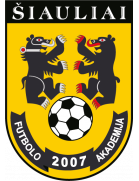 0:0 FK Banga Gargzdai Form: LDDD Form: LLWD |
0.23 vs -1.12 | 1.74 | 28% | 0.5 | ⚽ 1.58 |
🏥 📉 Home team has considerable injuries and a dip in form recently | 📉 Away team has a dip in form recently |
| Sun. 23 Jun. | NSÍ Runavík 4:0 EB/Streymur Form: WDLL Form: LLWW |
0.22 vs -0.97 | 1.17 | 28% | 1 | ⚽⚽ 2.72 |
📉 Home team has a dip in form recently | 📉 Away team has a dip in form recently |
| Sun. 23 Jun. | FC Cincinnati 1:2 New England Revolution Form: WLWW Form: LWWW |
0.21 vs -1.27 | n/a | 27% | 0 | ⚽⚽⚽ 3.34 |
📉 Home team has a dip in form recently | 🏥 Away team has considerable injuries |
| Sun. 23 Jun. | Aalesunds FK 1:2 Ranheim IL Form: LDLL Form: LDWW |
0.2 vs -0.89 | 2.38 | 26% | 0 | ⚽⚽ 2.27 |
📉 Home team has a dip in form recently | |
| Sun. 23 Jun. | Scotland 0:1 Hungary Form: DLDL Form: WLLW |
-0.21 vs 0.2 | 2.6 | 26% | 1 | ⚽⚽ 2.07 |
📉 Home team has a dip in form recently | 📉 Away team has a dip in form recently |
| Sun. 23 Jun. | Östersunds FK 1:0 Utsiktens BK Form: WWLD Form: WWLL |
0.18 vs -0.87 | 2.4 | 25% | 1 | ⚽ 1.36 |
📉 Home team has a dip in form recently | 📉 Away team has a dip in form recently |
| Sun. 23 Jun. | Miami FC 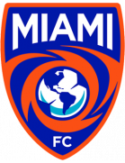 2:2 Loudoun United FC Form: LLLL Form: WLLD |
0.17 vs -1.0 | 1.01 | 24% | 0.5 | ⚽ 1.76 |
📉 Home team has a dip in form recently | 📉 Away team has a dip in form recently |
| Sun. 23 Jun. | Minnesota United FC 0:1 Austin FC Form: WDLL Form: LLLD |
0.17 vs -1.13 | n/a | 23% | 0 | ⚽⚽ 2.58 |
📉 Home team has a dip in form recently | 📉 Away team has a dip in form recently |
| Sun. 23 Jun. | Phoenix Rising FC 0:0 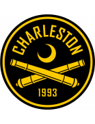 Charleston Battery Form: LLDW Form: LLDD |
0.16 vs -0.75 | 2.72 | 23% | 0.5 | ⚽ 1.69 |
📉 Home team has a dip in form recently | 📉 Away team has a dip in form recently |
| Sun. 23 Jun. | Bucheon FC 1995 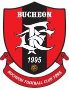 0:4 Chungbuk Cheongju FC Form: DLLW Form: DLWD |
0.12 vs -0.8 | 2.32 | 20% | 0 | 😴 0.64 |
📉 Home team has a dip in form recently | 📉 Away team has a dip in form recently |
| Sun. 23 Jun. | Modern Future FC 0:1 Ismaily SC Form: DDWL Form: DWDD |
0.12 vs -1.01 | 2.62 | 19% | 0 | ⚽ 1.37 |
📉 Home team has a dip in form recently | 📉 Away team has a dip in form recently |
| Sun. 23 Jun. | Mexico 1:0 Jamaica Form: LWLL Form: WLLL |
0.11 vs -0.85 | 1.68 | 19% | 1 | ⚽ 1.89 |
📉 Home team has a dip in form recently | 🏥🏥 📉 Away team has MAJOR injuries and a dip in form recently |
| Sun. 23 Jun. | Etoile Sportive du Sahel 2:4 AET Stade Tunisien Form: DLDL Form: DDWW |
0.11 vs -0.68 | 1.43 | 19% | 0 | 😴 0.64 |
📉 Home team has a dip in form recently | |
| Sun. 23 Jun. | Portland Timbers 2:0 Vancouver Whitecaps FC Form: WDDW Form: LWWL |
0.09 vs -0.81 | 2.24 | 17% | 1 | ⚽⚽⚽ 3.09 |
📉 Home team has a dip in form recently | 📉 Away team has a dip in form recently |
| Sun. 23 Jun. | FC Tulsa 0:0 Sacramento Republic FC Form: LWWD Form: WDLW |
-0.57 vs 0.08 | n/a | 17% | 0.5 | ⚽ 1.47 |
📉 Away team has a dip in form recently | |
| Sun. 23 Jun. | Remo Stars FC 2:1 Katsina United FC Form: LWLW Form: WLWL |
0.08 vs -1.08 | n/a | 17% | 1 | ⚽ 1.3 |
📉 Home team has a dip in form recently | 📉 Away team has a dip in form recently |
| Sun. 23 Jun. | Hokkaido Consadole Sapporo 0:1 Yokohama F. Marinos Form: WWLL Form: WLWW |
-1.06 vs 0.08 | 2.1 | 17% | 1 | ⚽⚽ 2.91 |
🏥🏥 📉 Home team has MAJOR injuries and a dip in form recently | 📉 Away team has a dip in form recently |
| Sun. 23 Jun. | Clube Atlético Mineiro postponed Fortaleza Esporte Clube Form: DLWW Form: WLLL |
0.08 vs -1.23 | 1.76 | 16% | None | ⚽⚽ 2.51 |
🏥 📉 Home team has considerable injuries and a dip in form recently | 🏥 📉 Away team has considerable injuries and a dip in form recently |
| Sun. 23 Jun. | Bendel Insurance 0:2 Bayelsa United Form: DWLL Form: DDWW |
0.08 vs -0.97 | n/a | 16% | 0 | ⚽ 1.0 |
📉 Home team has a dip in form recently | |
| Sun. 23 Jun. | Shooting Stars Sports Club 1:0 Sporting Lagos FC Form: LWLW Form: DLWL |
0.07 vs -1.07 | n/a | 16% | 1 | ⚽ 1.11 |
📉 Home team has a dip in form recently | 📉 Away team has a dip in form recently |
| Sun. 23 Jun. | CA San Telmo 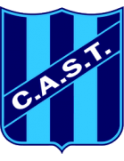 0:0 CA Mitre Form: LDWW Form: WDWD |
0.07 vs -0.8 | 2.02 | 15% | 0.5 | 😴 0.7 |
📉 Away team has a dip in form recently | |
| Sun. 23 Jun. | Blacktown City FC 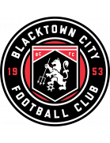 1:2 Rockdale Ilinden FC Form: WLDW Form: WLWW |
0.06 vs -0.52 | n/a | 15% | 0 | ⚽⚽ 2.27 |
📉 Home team has a dip in form recently | 📉 Away team has a dip in form recently |
| Sun. 23 Jun. | Sydney United 58 FC 0:0 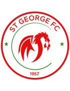 St George Saints FC Form: LLLL Form: DWLW |
0.05 vs -0.88 | n/a | 14% | 0.5 | ⚽⚽ 2.47 |
📉 Home team has a dip in form recently | 📉 Away team has a dip in form recently |
| Sun. 23 Jun. | Tuloy FC 1:3 Davao Aguilas FC Form: WLLL Form: DWLW |
-0.55 vs 0.05 | n/a | 14% | 1 | ⚽⚽ 2.54 |
📉 Home team has a dip in form recently | 📉 Away team has a dip in form recently |
| Sun. 23 Jun. | Mjøndalen IF 0:3 Egersunds IK Form: DLWL Form: WDDW |
-0.35 vs 0.05 | 2.26 | 14% | 1 | ⚽⚽ 2.97 |
📉 Home team has a dip in form recently | 📉 Away team has a dip in form recently |
| Sun. 23 Jun. | San Marcos de Arica 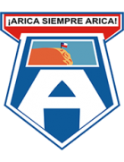 0:1 CD Cobreloa Form: WWWW Form: DLLW |
-0.76 vs 0.02 | 1.23 | 12% | 1 | ⚽⚽ 2.64 |
📉 Away team has a dip in form recently | |
| Sun. 23 Jun. | Incheon United 1:3 Pohang Steelers Form: DWLL Form: DWWD |
0.02 vs -0.79 | 2.7 | 12% | 0 | ⚽ 1.98 |
📉 Home team has a dip in form recently | |
| Sun. 23 Jun. | Doma United 1:1 Abia Warriors FC Form: LLLD Form: DWWD |
0.01 vs -0.9 | n/a | 10% | 0.5 | 😴 0.8 |
📉 Home team has a dip in form recently | |
| Sun. 23 Jun. | FK Baranovichi 1:3 Niva Dolbizno Form: WLWL Form: WDWW |
-0.43 vs -0.0 | n/a | 10% | 1 | ⚽⚽ 2.51 |
📉 Home team has a dip in form recently | |
| Sun. 23 Jun. | Niger Tornadoes 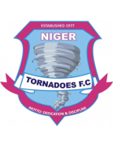 2:1 Sunshine Stars Form: DWLW Form: WWWL |
-0.01 vs -0.89 | n/a | 10% | 1 | 😴 0.79 |
📉 Home team has a dip in form recently | 📉 Away team has a dip in form recently |
| Sun. 23 Jun. | New Taipei City Hang Yuan FC 1:1 Ming Chuan University Form: WLLL Form: LLWL |
-0.01 vs -0.87 | 1.16 | 10% | 0.5 | ⚽ 1.24 |
📉 Home team has a dip in form recently | 📉 Away team has a dip in form recently |
| Sun. 23 Jun. | CA Racing (Córdoba) 1:2 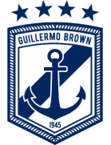 Club Social y Atlético Guillermo Brown Form: LDLW Form: LLDW |
-0.03 vs -0.91 | 1.44 | 9% | 0 | ⚽ 1.07 |
📉 Home team has a dip in form recently | 📉 Away team has a dip in form recently |
| Sun. 23 Jun. | Kano Pillars 3:2 Lobi Stars FC Form: DLDW Form: WLWL |
-0.03 vs -0.86 | n/a | 9% | 1 | ⚽ 1.82 |
📉 Home team has a dip in form recently | 📉 Away team has a dip in form recently |
| Sun. 23 Jun. | Esporte Clube Bahia 4:1 Cruzeiro Esporte Clube Form: DWDL Form: WLDL |
-0.05 vs -0.95 | n/a | 9% | 1 | ⚽⚽ 2.05 |
📉 Home team has a dip in form recently | 🏥 📉 Away team has considerable injuries and a dip in form recently |
| Sun. 23 Jun. | Montevideo Wanderers 1:3 CA River Plate Montevideo Form: LWWL Form: LDLD |
-0.07 vs -0.7 | n/a | 9% | 0 | ⚽ 1.5 |
📉 Home team has a dip in form recently | 📉 Away team has a dip in form recently |
| Sun. 23 Jun. | FC Zhenis Astana 1:3 Ordabasy Shymkent Form: WLDL Form: DDWW |
-0.08 vs -0.59 | n/a | 8% | 0 | ⚽ 1.54 |
📉 Home team has a dip in form recently | |
| Sun. 23 Jun. | Seattle Sounders FC 3:2 FC Dallas Form: DLWD Form: LDWW |
-0.1 vs -1.05 | 1.62 | 8% | 1 | ⚽ 1.49 |
📉 Home team has a dip in form recently | 🏥 Away team has considerable injuries |
| Sun. 23 Jun. | Las Vegas Lights FC 1:1 Memphis 901 FC Form: DWDD Form: LDDW |
-0.1 vs -0.68 | 2.48 | 8% | 0.5 | ⚽⚽ 2.39 |
📉 Home team has a dip in form recently | 📉 Away team has a dip in form recently |
| Sun. 23 Jun. | Ituano Futebol Clube (SP) 1:1 Brusque Futebol Clube (SC) Form: LLLD Form: LWDD |
-0.1 vs -0.54 | n/a | 8% | 0.5 | ⚽ 1.46 |
📉 Home team has a dip in form recently | 📉 Away team has a dip in form recently |
| Sun. 23 Jun. | FK Turan 2:2 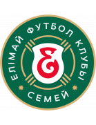 Yelimay Semey Form: LLDD Form: LDDW |
-0.11 vs -0.33 | 1.09 | 8% | 0.5 | ⚽⚽ 2.18 |
📉 Home team has a dip in form recently | 📉 Away team has a dip in form recently |
| Sun. 23 Jun. | Rampla Juniors FC 1:2 Miramar Misiones Form: WLDL Form: WLWW |
-0.11 vs -0.41 | 2.8 | 8% | 0 | ⚽ 1.97 |
📉 Home team has a dip in form recently | 📉 Away team has a dip in form recently |
| Sun. 23 Jun. | Åsane Fotball 1:4 Moss FK Form: LLWL Form: WLWW |
-0.11 vs -0.56 | n/a | 8% | 0 | ⚽ 1.94 |
📉 Home team has a dip in form recently | 📉 Away team has a dip in form recently |
| Sun. 23 Jun. | FK Istaravshan 0:1 Regar-TadAZ Tursunzoda Form: LDWW Form: WLWW |
-0.11 vs -0.27 | n/a | 8% | 0 | 😴 0.68 |
📉 Away team has a dip in form recently | |
| Sun. 23 Jun. | Dnepr Mogilev 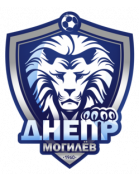 1:2 FK Vitebsk Form: LLLL Form: WWDL |
-0.11 vs -0.4 | n/a | 8% | 0 | ⚽ 1.33 |
📉 Home team has a dip in form recently | 📉 Away team has a dip in form recently |
| Sun. 23 Jun. | Athletic Club Taipei 0:1 Futuro Form: WWWL Form: LWWW |
-0.44 vs -0.11 | 1.75 | 8% | 1 | ⚽ 1.44 |
📉 Home team has a dip in form recently | |
| Sun. 23 Jun. | Associação Chapecoense de Futebol 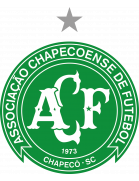 1:2 Paysandu SC Form: DWLL Form: WLWD |
-0.12 vs -0.48 | 2.48 | 8% | 0 | ⚽ 1.37 |
📉 Home team has a dip in form recently | 📉 Away team has a dip in form recently |
| Sun. 23 Jun. | Bryne FK 5:3 Lyn 1896 FK Form: WLWL Form: DWLL |
-0.13 vs -0.38 | n/a | 7% | 1 | ⚽⚽ 2.05 |
📉 Home team has a dip in form recently | 📉 Away team has a dip in form recently |
| Sun. 23 Jun. | CA Patronato 4:0 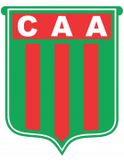 CA Agropecuario Form: LDLD Form: WDWL |
-0.13 vs -0.53 | 2.44 | 7% | 1 | ⚽ 1.16 |
📉 Home team has a dip in form recently | 📉 Away team has a dip in form recently |
| Sun. 23 Jun. | FK Lida 0:1 FK Orsha Form: WWWW Form: DDDW |
-0.14 vs -0.97 | n/a | 7% | 0 | ⚽⚽ 2.14 |
🏥 Home team has considerable injuries | 📉 Away team has a dip in form recently |
| Sun. 23 Jun. | El Masry SC 0:2 Cleopatra FC Form: WDDW Form: LWWL |
-0.15 vs -0.8 | 2.7 | 7% | 0 | ⚽⚽ 2.25 |
📉 Home team has a dip in form recently | 📉 Away team has a dip in form recently |
| Sun. 23 Jun. | CD Maipú 0:2 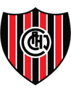 CA Chacarita Juniors Form: LDWW Form: LWLW |
-0.4 vs -0.15 | 1.64 | 7% | 1 | ⚽ 1.95 |
📉 Away team has a dip in form recently | |
| Sun. 23 Jun. | Club Atlético Gimnasia y Esgrima (Jujuy) 2:0 Club Atlético San Martín (Tucumán) Form: LWLL Form: WWWD |
-0.16 vs -0.59 | 2.66 | 7% | 1 | 😴 0.5 |
📉 Home team has a dip in form recently | |
| Sun. 23 Jun. | Colorado Rapids 4:1 CF Montréal Form: LLWW Form: WDDD |
-0.16 vs -0.74 | 1.42 | 7% | 1 | ⚽ 1.9 |
📉 Home team has a dip in form recently | 📉 Away team has a dip in form recently |
| Sun. 23 Jun. | Raufoss IL 2:1 IK Start Form: LLLL Form: DLWL |
-0.17 vs -0.77 | 2.18 | 7% | 1 | ⚽ 1.71 |
📉 Home team has a dip in form recently | 📉 Away team has a dip in form recently |
| Sun. 23 Jun. | Gimpo FC 1:0 Busan IPark Form: WWWD Form: LLDD |
-0.18 vs -0.35 | n/a | 6% | 1 | ⚽ 1.13 |
📉 Away team has a dip in form recently | |
| Sun. 23 Jun. | FK Atyrau 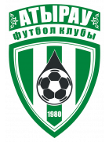 0:0 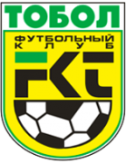 Tobol Kostanay Form: WWWD Form: WLWL |
-0.18 vs -0.64 | 1.48 | 6% | 0.5 | 😴 0.55 |
📉 Away team has a dip in form recently | |
| Sun. 23 Jun. | Tokushima Vortis 1:0 Mito HollyHock Form: WLWL Form: LLWW |
-0.19 vs -0.67 | n/a | 6% | 1 | 😴 0.99 |
📉 Home team has a dip in form recently | 📉 Away team has a dip in form recently |
| Sun. 23 Jun. | Gombe United FC 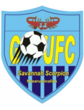 1:2 Enugu Rangers IFC Form: LLLL Form: WLWW |
-0.19 vs -0.59 | n/a | 6% | 0 | ⚽⚽ 2.22 |
📉 Home team has a dip in form recently | 📉 Away team has a dip in form recently |
| Sun. 23 Jun. | New Mexico United 1:0 Colorado Springs Switchbacks FC Form: WLWL Form: WDWD |
-0.2 vs -0.43 | 2.26 | 6% | 1 | ⚽ 1.55 |
📉 Home team has a dip in form recently | 📉 Away team has a dip in form recently |
| Sun. 23 Jun. | CA Güemes 0:1 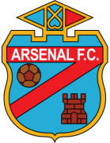 Arsenal FC Form: DWLD Form: DLLL |
-0.2 vs -1.22 | 2.18 | 6% | 0 | 😴 0.35 |
📉 Home team has a dip in form recently | 🏥🏥 📉 Away team has MAJOR injuries and a dip in form recently |
| Sun. 23 Jun. | Taiwan Power Company 4:0 Taiwan Leopard Cat FC Form: WLLW Form: LWLW |
-0.2 vs -0.38 | 1.23 | 6% | 1 | ⚽ 1.54 |
📉 Home team has a dip in form recently | 📉 Away team has a dip in form recently |
| Sun. 23 Jun. | Indy Eleven 0:1 Orange County SC Form: WWWL Form: LWWL |
-0.22 vs -0.28 | n/a | 6% | 0 | ⚽ 1.56 |
📉 Home team has a dip in form recently | 📉 Away team has a dip in form recently |
| Sun. 23 Jun. | Jeju United 2:3 Ulsan HD FC Form: LWLW Form: DWWW |
-1.03 vs -0.23 | 1.98 | 5% | 1 | ⚽⚽ 2.76 |
🏥🏥 📉 Home team has MAJOR injuries and a dip in form recently | 🏥🏥 Away team has MAJOR injuries |
| Sun. 23 Jun. | St. Louis CITY SC 1:1 Atlanta United FC Form: DDLL Form: WLDW |
-0.64 vs -0.24 | n/a | 5% | 0.5 | ⚽⚽ 2.16 |
📉 Home team has a dip in form recently | 📉 Away team has a dip in form recently |
| Sun. 23 Jun. | CA Alvarado 0:0 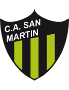 CA San Martín (San Juan) Form: LWLW Form: WWWD |
-0.24 vs -0.48 | 2.02 | 5% | 0.5 | ⚽ 1.4 |
📉 Home team has a dip in form recently | |
| Sun. 23 Jun. | Ansan Greeners 1:2 Cheonan City Form: LLLW Form: LDWL |
-0.26 vs -0.47 | 2.8 | 5% | 0 | ⚽ 1.74 |
📉 Home team has a dip in form recently | 📉 Away team has a dip in form recently |
| Sun. 23 Jun. | Fluminense Football Club 0:1 CR Flamengo Form: DLLL Form: WDWW |
-1.07 vs -0.27 | 1.86 | 5% | 1 | ⚽ 1.56 |
🏥🏥 📉 Home team has MAJOR injuries and a dip in form recently | 🏥🏥 Away team has MAJOR injuries |
| Sun. 23 Jun. | CDP Curicó Unido 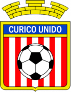 1:0 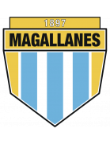 CD Magallanes Form: DWDW Form: LWWW |
-0.27 vs -0.3 | 1.07 | 5% | 1 | ⚽⚽ 2.04 |
||
| Sun. 23 Jun. | Nashville SC 1:0 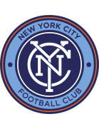 New York City FC Form: WLDW Form: WWLL |
-0.28 vs -0.56 | 1.65 | 4% | 1 | ⚽ 1.36 |
📉 Home team has a dip in form recently | 📉 Away team has a dip in form recently |
| Sun. 23 Jun. | Vila Nova Futebol Clube (GO) 1:0' Goiás EC Form: DWLW Form: LDLL |
-0.39 vs -0.3 | n/a | 4% | None | ⚽ 1.47 |
📉 Home team has a dip in form recently | 📉 Away team has a dip in form recently |
| Sun. 23 Jun. | CA Atenas de San Carlos 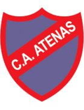 19:00 Juventud de Las Piedras Form: WLWL Form: WLWW |
-0.38 vs -0.3 | 1.43 | 4% | None | 😴 0.95 |
📉 Home team has a dip in form recently | 📉 Away team has a dip in form recently |
| Sun. 23 Jun. | Colon FC de Uruguay 23:30 Club Plaza Colonia Form: DDWL Form: WLLW |
-0.72 vs -0.31 | n/a | 4% | None | ⚽ 1.66 |
📉 Home team has a dip in form recently | 🏥 📉 Away team has considerable injuries and a dip in form recently |
| Sun. 23 Jun. | US Monastir 1:2 Club Africain Tunis Form: WLDL Form: DDWL |
-0.31 vs -0.36 | 1.43 | 4% | 0 | ⚽ 1.07 |
📉 Home team has a dip in form recently | 📉 Away team has a dip in form recently |
| Sun. 23 Jun. | Deportivo Municipal 1:1 Comerciantes FC Form: WDDD Form: WWWD |
-0.31 vs -0.39 | 2.02 | 4% | 0.5 | ⚽ 1.37 |
📉 Home team has a dip in form recently | |
| Sun. 23 Jun. | Real Salt Lake City 0:1 Los Angeles Galaxy Form: WDWL Form: WLWW |
-0.32 vs -0.57 | 1.62 | 4% | 0 | ⚽⚽ 2.99 |
📉 Home team has a dip in form recently | 📉 Away team has a dip in form recently |
| Sun. 23 Jun. | Clube de Regatas Vasco da Gama 4:1 São Paulo Futebol Clube Form: LLDL Form: WDDL |
-0.35 vs -0.72 | n/a | 3% | 1 | ⚽⚽ 2.26 |
📉 Home team has a dip in form recently | 🏥 📉 Away team has considerable injuries and a dip in form recently |
| Sun. 23 Jun. | Akwa United 3:1 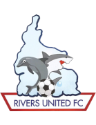 Rivers United FC Form: LWLW Form: WLWL |
-0.39 vs -0.57 | n/a | 2% | 1 | ⚽ 1.41 |
📉 Home team has a dip in form recently | 📉 Away team has a dip in form recently |
| Sun. 23 Jun. | D.C. United 1:4 Houston Dynamo FC Form: LDLL Form: WDDD |
-0.41 vs -0.43 | n/a | 2% | 0 | ⚽⚽ 2.45 |
📉 Home team has a dip in form recently | 📉 Away team has a dip in form recently |
| Sun. 23 Jun. | Club Athletico Paranaense 1:1 Sport Club Corinthians Paulista Form: WDDD Form: DDLD |
-0.65 vs -0.55 | n/a | 0% | 0.5 | ⚽ 1.88 |
🏥 📉 Home team has considerable injuries and a dip in form recently | 🏥 📉 Away team has considerable injuries and a dip in form recently |
Last updated 04:39:29 2024-06-27
Privacy Policy - 18+. Gamble Responsibly. - Terms